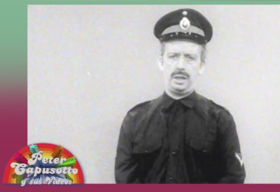

Inicio
Obras
Investigaciones
Biografia
Contacto
Investigaciones
2019 - Tesis de investigación
Distrofia digital: una produccion de arte electronico realizada con desechos.
2018 - Articulo de investigación
Distopias y feminismo. Un analisis de la perspectiva de genero en la ciencia ficcion.

2017 - Articulo de investigación
La parodia posmoderna en la seria "El Rock vs la policia" de Peter Capusotto y sus videos.